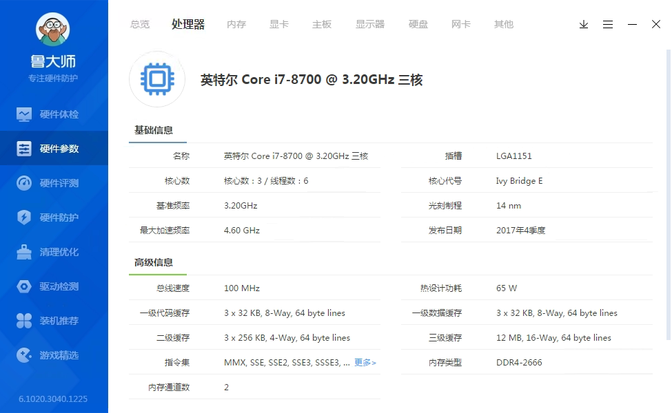
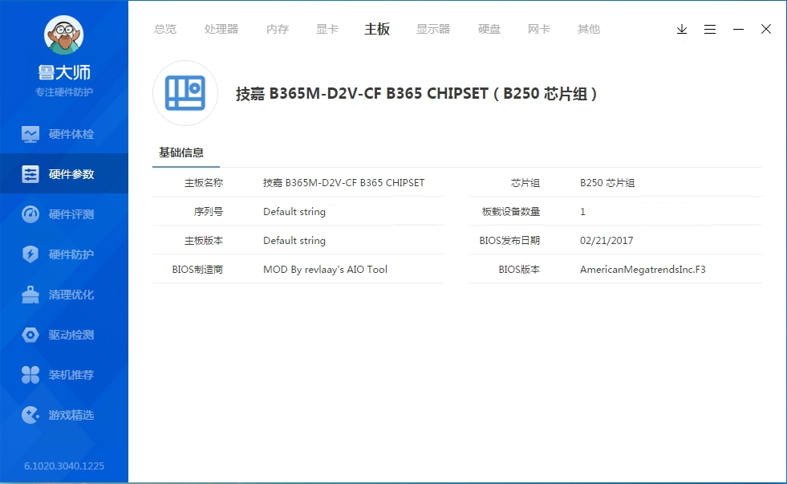
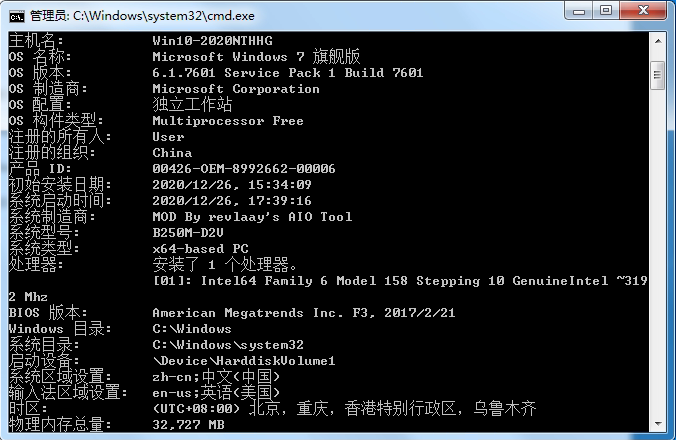
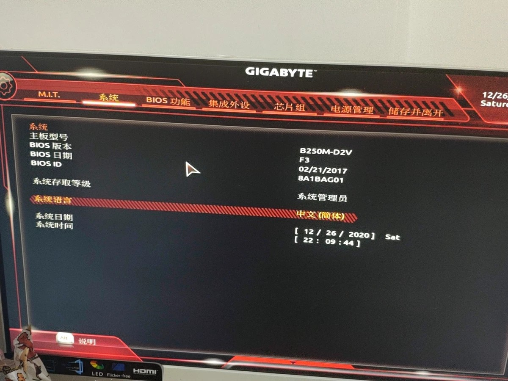
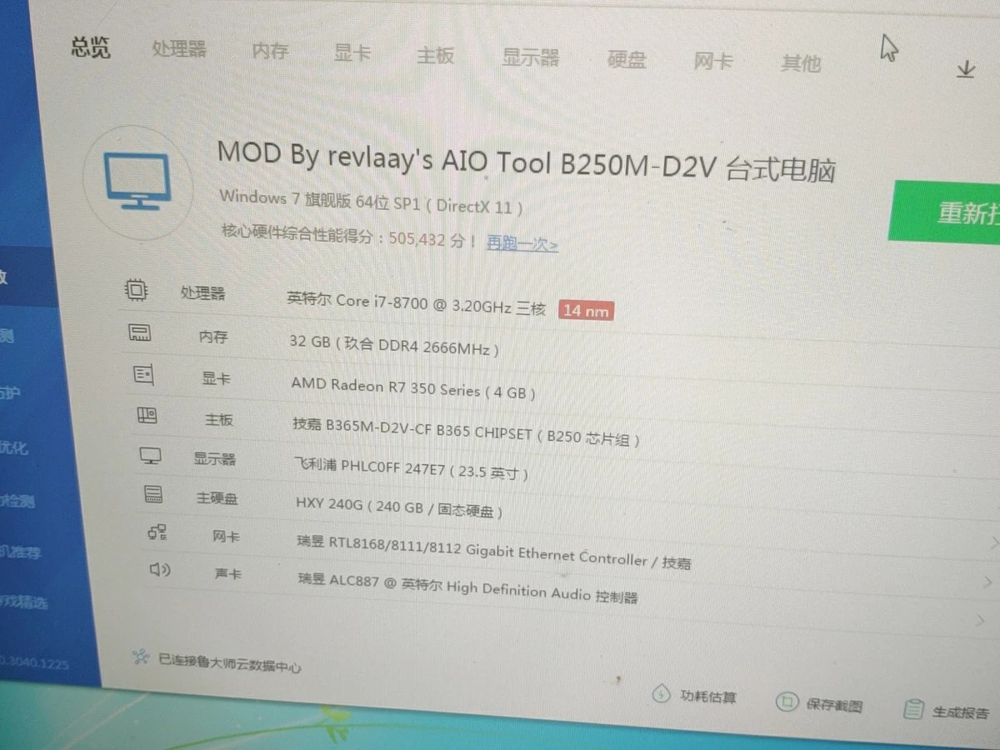

i7-8700只有三核？
2020-12-26有人问了我一个奇怪的问题，他的i7-8700怎么只有3核？尝试过重装系统也还是只有3核。
怀疑是鲁大师不正常，使用CPU-Z测试仍然显示只有三核
此时我发现这个主板型号有点不太对劲，写着B365M，却又写着B250芯片组
在cmd中输入“systeminfo"查看主板型号为B250M-D2V
为了进一步确认，在BIOS下查看主板型号也为B250M-D2V，该主板理论上来说是不支持Intel 8代CPU的，怀疑这块主板是魔改而成
此时我突然注意到鲁大师检测的电脑型号中显示“MOD By revlaay's AIO Tool”，证明了我的想法。
为什么会导致i7-8700只有3核，猜测可能是魔改不到位造成，具体原因还在研究中。